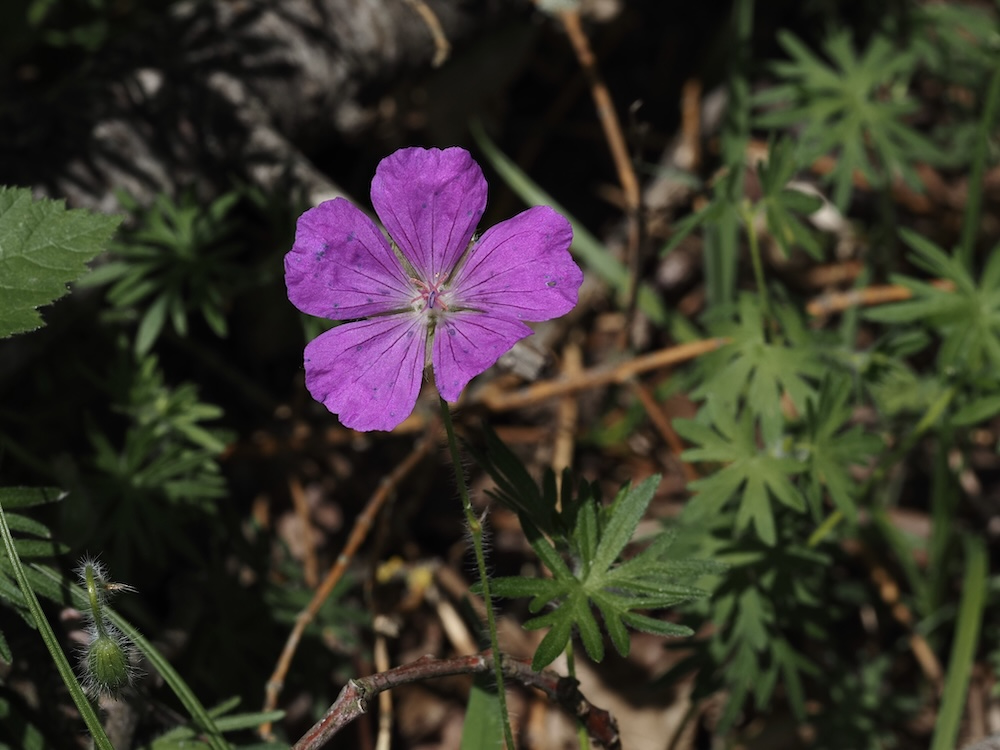
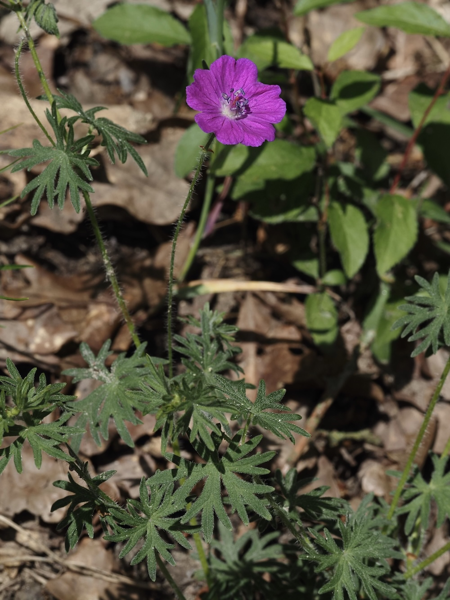

Blutroter Magerrasen-Star — eine Show-Pflanze auf nährstoffarmem Boden.



Die intensivste Storchschnabel-Farbe
Während die meisten Storchschnäbel zartrosa, violett oder blau blühen, leuchtet der Blutrote in einem intensiven, fast purpurfarbenen Rot. Diese Farbe ist eine der intensivsten unter heimischen Wildpflanzen — selbst aus 20 Metern Entfernung deutlich erkennbar. Bestäuber-Insekten erkennen UV-empfindlich noch zusätzliche Saftmale, die der Mensch nicht sieht: eine Art „Landebahn-Markierung“ für Hummeln und Wildbienen.
Im Herbst rot-orange
Die Show endet nicht mit dem Verblühen: Im Herbst färben sich die Blätter spektakulär rot-orange — wie kleine Ahorn-Blätter auf dem Boden. Diese herbstliche Farbpracht macht den Blutroten Storchschnabel zu einer der schönsten heimischen Wildpflanzen für Steingärten und sonnige Wiesenränder.
Wissenswertes & Merksätze
Erkennen leicht gemacht
Aufrechter, oft etwas niederliegender Stängel (20–50 cm). Blätter handförmig in 5–7 schmale Lappen tief zerschlitzt, auf der Unterseite oft rötlich. Blüten einzeln (3–4 cm), intensiv purpurrot bis blutrot, fünf Blütenblätter. Im Herbst Laubverfärbung.
Magerrasen-Indikator
G. sanguineum braucht trockene, sonnige, kalkhaltige Magerrasen. Wo er noch in Beständen wächst, ist meist ein wertvoller, intakter Trockenrasen-Lebensraum — Heimat vieler bedrohter Insekten und Wildbienen.